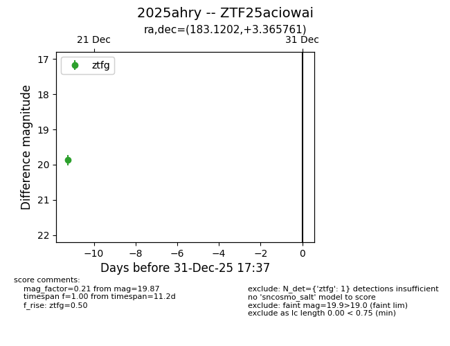
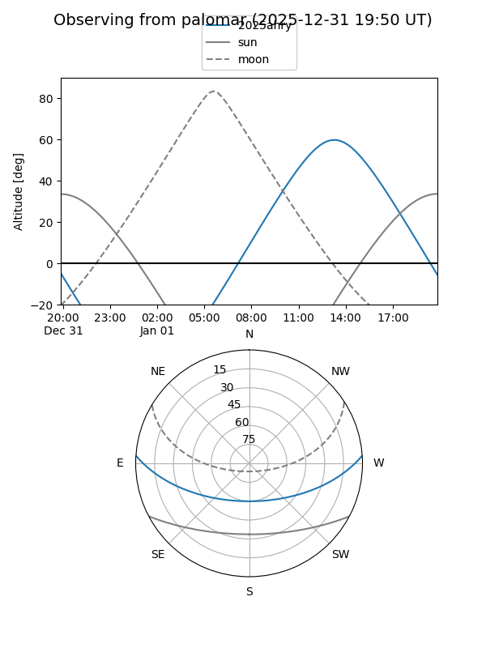

2025ahry
Target 2025ahry at 2025-12-31 18:00
Aliases and brokers:
FINK: link
Lasair: link
ALeRCE: link
TNS: link
YSE: link
alt names
ZTF25aciowai (ztf,fink_ztf)
2025ahry (tns,yse)
Coordinates:
equatorial (ra, dec) = 183.1202,+3.36576
equatorial (HMS+DMS) = 12:12:28.86,+03:21:56.74
galactic (l, b) = (279.8564,+64.47789)
Flags:
Photometry:
last ztfg=19.87
1 ztfg detections
Lightcurve

Visibility


Additional plots